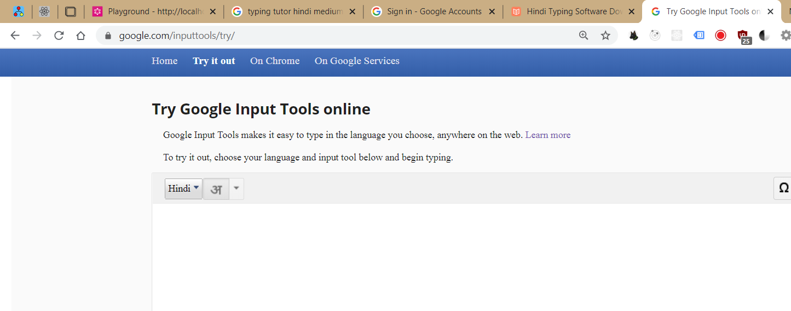
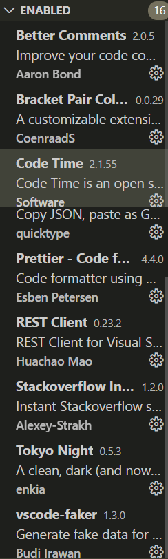

Indic keyboard for desktop-

1 to 10 in Hindi
0 zero ० शून्य Shuniye 1 one १ एक Ek 2 two २ दो Do 3 three ३ तीन Teen 4 four ४ चार Char 5 five ५ पांच Panch 6 six ६ छह Cheh 7 seven ७ सात Saat 8 eight ८ आठ Aath 9 nine ९ नौ Nao 10 ten १० दस Das
11 to 20 in Hindi
11 eleven ११ ग्यारह Gyaarah 12 twelve १२ बारह Baarah 13 thirteen १३ तेरह Tehrah 14 fourteen १४ चौदह Chaudah 15 fifteen १५ पंद्रह Pandrah 16 sixteen १६ सोलह Saulah 17 seventeen १७ सत्रह Satrah 18 eighteen १८ अठारह Atharah 19 nineteen १९ उन्नीस Unnis 20 twenty २० बीस Bees
21 to 30 in Hindi
21 twenty one २१ इकीस Ikis 22 twenty two २२ बाईस Bais 23 twenty three २३ तेइस Teis 24 twenty four २४ चौबीस Chaubis 25 twenty five २५ पच्चीस Pachis 26 twenty six २६ छब्बीस Chabis 27 twenty seven २७ सताइस Satais 28 Twenty eight २८ अट्ठाइस Athais 29 twenty nine २९ उनतीस Unatis 30 thirty ३० तीस Tis
31 to 39 in Hindi
31 thirty one ३१ इकतीस Ikatis 32 thirty two ३२ बतीस Batis 33 thirty three ३३ तैंतीस Teintis 34 thirty four ३४ चौंतीस Chautis 35 thirty five ३५ पैंतीस Paintis 36 thirty six ३६ छतीस Chatis 37 thirty seven ३७ सैंतीस Setis 38 thirty eight ३८ अड़तीस Adhtis 39 thirty nine ३९ उनतालीस Untaalis 40 forty ४० चालीस Chalis
41 to 49 in Hindi
41 forty one ४१ इकतालीस Iktalis 42 forty two ४२ बयालीस Byalis 43 forty three ४३ तैतालीस Tetalis 44 forty four ४४ चवालीस Chavalis 45 forty five ४५ पैंतालीस Pentalis 46 forty six ४६ छयालिस Chyalis 47 forty seven ४७ सैंतालीस Setalis 48 forty eight ४८ अड़तालीस Adtalis 49 forty nine ४९ उनचास Unachas 50 fifty ५० पचास Pachas
51 to 60 in Hindi
51 fifty one ५१ इक्यावन Ikyavan 52 fifty two ५२ बावन Baavan 53 fifty three ५३ तिरपन Tirepan 54 fifty four ५४ चौवन Chauwan 55 fifty five ५५ पचपन Pachpan 56 fifty six ५६ छप्पन Chappan 57 fifty seven ५७ सतावन Satavan 58 fifty eight ५८ अठावन Athaavan 59 fifty nine ५९ उनसठ Unsadh 60 sixty ६० साठ Saadh
61 to 70 in Hindi
61 sixty one ६१ इकसठ Iksadh 62 sixty two ६२ बासठ Baasad 63 sixty three ६३ तिरसठ Tirsadh 64 sixty four ६४ चौंसठ Chausadh 65 sixty five ६५ पैंसठ Pensath 66 sixty six ६६ छियासठ Chiyasath 67 sixty seven ६७ सड़सठ Sadhsath 68 sixty eight ६८ अड़सठ Asdhsath 69 sixty nine ६९ उनहतर Unahtar 70 seventy ७० सत्तर Sattar
71 to 80 in Hindi
71 seventy one ७१ इकहतर Ikahtar 72 seventy two ७२ बहतर Bahatar 73 seventy three ७३ तिहतर Tihatar 74 seventy four ७४ चौहतर Chauhatar 75 seventy five ७५ पचहतर Pachhatar 76 seventy six ७६ छिहतर Chiyahatar 77 seventy seven ७७ सतहतर Satahatar 78 seventy eight ७८ अठहतर Adhahatar 79 seventy nine ७९ उन्नासी Unnasi 80 eighty ८० अस्सी Assi
81 to 90 in Hindi
81 eighty one ८१ इक्यासी Ikyasi 82 eighty two ८२ बयासी Byaasi 83 eighty three ८३ तिरासी Tirasi 84 eighty four ८४ चौरासी Chaurasi 85 eighty five ८५ पचासी Pachasi 86 eighty six ८६ छियासी Chiyaasi 87 eighty seven ८७ सतासी Sataasi 88 eighty eight ८८ अट्ठासी Athasi 89 eighty nine ८९ नवासी Nauasi 90 ninety ९० नब्बे Nabbay
91 to 100 in Hindi
91 ninety one ९१ इक्यानवे Ikyaanave 92 ninety two ९२ बानवे Baanave 93 ninety three ९३ तिरानवे Tiranavay 94 ninety four ९४ चौरानवे Chauraanavay 95 ninety five ९५ पचानवे Pachaanavay 96 ninety six ९६ छियानवे Chiyaanavay 97 ninety seven ९७ सतानवे Sataanavay 98 ninety eight ९८ अट्ठानवे Adhaanavay 99 ninety nine ९९ निन्यानवे Ninyaanavay 100 one hundred १०० एक सौ Ek Sau
